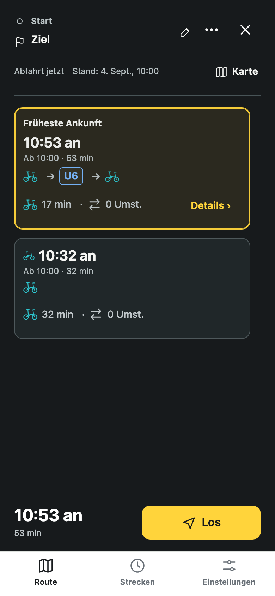

ÖPNV kann mehr.
Mit deinem Klapprad.
FoldRoute kombiniert Rad, Bus und Bahn – mit Radetappen zum Bahnhof, zwischen Linien und bis ans Ziel.
Route planenOhne Konto. Direkt im Browser.
Eine Reise. Alle Wege.
Schematische Darstellung
RadÖPNVRad
Dein Klapprad
verbindet die Linien.
Radetappen zwischen Linien eröffnen neue Verbindungen und können Umwege verkürzen.
Mit Faltrad
Mit dem Rad zur nächsten Linie.
Deine nächste Route.
Direkt im Browser.
Ziel wählen.
Lege Start, Ziel und Zeitpunkt fest.
Verbindungen vergleichen.
Finde deine passende Kombination aus Rad, Bus und Bahn.
Losfahren.
Mit Navigation und Sprachansagen – bei geöffneter App und eingeschaltetem Bildschirm.
Favoriten und gespeicherte Strecken bleiben auf deinem Gerät.

Auch fürs iPhone.
Noch in Entwicklung.
iPhone-Prototyp mit Navigation, Sprache und Haptik. Noch in Entwicklung und nicht im App Store.
Noch kurz vor
der Abfahrt.
Wie kann ich FoldRoute ausprobieren?
Öffne den Webplaner und wähle dein Ziel. Eine Installation ist nicht nötig.
Wie wird mein Klapprad eingeplant?
FoldRoute vergleicht Rad- und ÖPNV-Etappen für deine ganze Reise, auch zwischen zwei Linien. Radtempo, maximale Radzeit und die Zeit zum Falten und Entfalten stellst du selbst ein.
Kann ich FoldRoute als App nutzen?
Ja. Füge den Webplaner zum Home-Bildschirm hinzu. So installierst du ihn.
Die native iPhone-App ist ein eigenes Projekt und noch in Entwicklung. Eine direkte Übernahme der Webroute in die iPhone-App gibt es noch nicht.
Wie kann ich den iPhone-Prototyp selbst bauen?
Du brauchst einen Mac mit Xcode 26 oder neuer.
Lade den Quellcode als ZIP herunter und entpacke ihn. Öffne darin ios/FoldRoute.xcodeproj, wähle ein iPhone oder einen Simulator und starte die App mit „Run“.
Für dein eigenes iPhone brauchst du iOS 18 oder neuer und ein Apple-Entwicklerteam. Die vollständige Bauanleitung erklärt auch die Gerätesignierung. Den Code findest du im GitHub-Repository.
Kann ich ohne App eine Route planen?
Ja. Im Webplaner vergleichst du Rad- und ÖPNV-Verbindungen mit deinen Faltzeiten und Einstellungen. Die PWA bietet Navigation bei geöffneter App mit Abbiegehinweisen, Karte in Fahrtrichtung, Sprachansagen und aktuellen ÖPNV-Daten. Haptik gehört zum iPhone-Prototyp.
Den Webplaner kannst du zum Home-Bildschirm hinzufügen und bis zu 20 gespeicherte Strecken offline ansehen. Ihre Zeiten entsprechen der damaligen Abfrage. Neue Routen, Ortssuche, aktuelle Verbindungsdaten und Straßenkarten benötigen Internet.
Wo kann ich FoldRoute nutzen?
Gib Start und Ziel in deiner Region ein. Verbindungen und Echtzeitinformationen hängen von den verfügbaren Verkehrsdaten bei Transitous ab und können sich regional unterscheiden. FoldRoute ist noch nicht flächendeckend erprobt.
Ist das hier eine echte Routenplanung?
Diese Landingpage stellt das Projekt vor. Die Karten sind Illustrationen; die Webplaner-Vorschau zeigt die echte Oberfläche mit Beispieldaten. Im Webplaner und im iPhone-Prototyp werden echte Routen ab deinem Standort oder einem gewählten Startpunkt berechnet.
Welche Daten werden beim Planen übertragen?
Der iPhone-Prototyp sendet Start, Ziel, gewählte Zwischenziele, Zeitpunkt und Routing-Einstellungen an Transitous. MapKit verarbeitet Ortssuchen. Einstellungen, Favoriten, letzte Orte und Fahrten bleiben lokal, ohne GPS-Spuren.
Im Webplaner gehen Ortssuchen und dieselben Planungsangaben an Transitous; OpenStreetMap liefert die Kartenkacheln. Einstellungen, Favoriten und letzte Orte bleiben auf deinem Gerät. Standardmäßig speichert der Webplaner außerdem bis zu 20 unterschiedliche geplante Strecken mit Zwischenzielen, Streckenverlauf und damaligen Zeiten. Aktive Navigation speichert Abschnitt und Manöver zur bestätigten Wiederaufnahme.
Fahrtkennungen werden für Live-Daten an Transitous übertragen; Neuberechnungen verwenden den aktuellen Standort. Browserstimmen können online arbeiten.
Ausschalten von „Fahrten auf diesem Gerät speichern“ löscht den Fahrtenverlauf und die Wiederaufnahme; Orte und Einstellungen bleiben erhalten. Einzelne Fahrten lassen sich im Tab „Fahrten“ löschen. „Alle lokalen Daten löschen“ entfernt auch Einstellungen, Favoriten und letzte Orte. Der Browser kann lokale Daten ebenfalls entfernen.
Mehr zur Offline-Nutzung. Landingpage und Webplaner verwenden keine Analyse-Tools und keine extern geladenen Schriften.
Was kann der Prototyp noch nicht?
Ticketkauf, Offline-Karten, Apple Watch und CarPlay sind nicht enthalten. Transitous ist ein Best-Effort-Dienst; Verbindungen und Navigation müssen noch im Alltag auf einem echten Gerät erprobt werden.